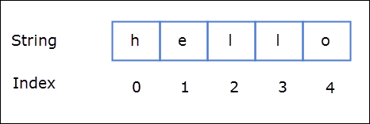
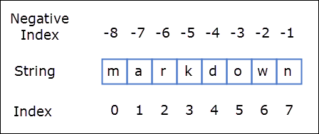
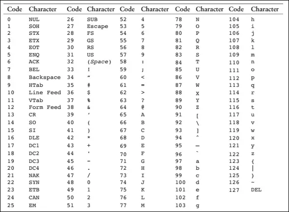
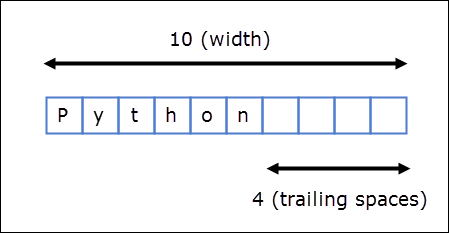
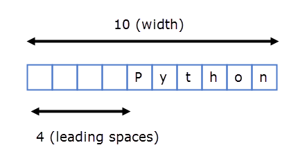

Strings in Python
Last updated on September 21, 2020
A string a sequence of characters enclosed in single ('') or double quotation ("") marks. Here is how you create strings in python.
1 2 3 4 5 6 7 8 9 | >>>
>>> s1 = 'String in single quotes'
>>> s1
'String in single quotes'
>>>
>>> s2 = "String in double quotes"
>>> s2
'String in double quotes'
>>>
|
1 2 3 4 5 6 7 | >>>
>>> 'hello everyone'
'hello everyone'
>>>
>>> "hello everyone"
'hello everyone'
>>>
|
Inside the Python Shell or IDLE the string is always displayed using single quotation marks. However, if you use the print() function only contents of the string is displayed.
1 2 3 4 5 6 | >>>
>>> print(s1)
String in single quotes
>>> print(s2)
String in double quotes
>>>
|
Some languages like C, C++, Java treats a single character as a special type called char, but in Python a single character is also a string.
1 2 3 4 5 6 7 8 | >>>
>>> achar = 'a' # string containing a single character
>>> type(achar)
<class 'str'>
>>>
>>> type("a string") # string containing multiple characters
<class 'str'>
>>>
|
Counting Number of Characters Using len() Function #
The len() built-in function counts the number of characters in the string.
1 2 3 4 5 6 7 8 9 10 11 12 | >>>
>>> len("a string")
8
>>>
>>> s = "a long string"
>>>
>>> len(s)
13
>>>
>>> len("")
0
>>>
|
Creating Empty Strings #
1 2 3 4 5 6 7 8 9 | >>>
>>> s3 = '' # empty string using single quotes
>>> s3
''
>>>
>>> s4 = "" # empty string using double quotes
>>> s4
''
>>>
|
Although variables s3 and s4 do not contain any characters they are still valid strings. You can verify this fact by using the type() function.
1 2 3 4 5 6 7 | >>>
>>> type(s3)
<class 'str'>
>>>
>>> type(s4)
<class 'str'>
>>>
|
So should I use single quotes or double quotes while creating strings?
Double quotes come in handy when you have single quotation marks inside a string. For example:
1 2 3 4 | >>>
>>> print("I'm learning python")
I'm learning python
>>>
|
If we had used the single quotes, we would get the following error:
1 2 3 4 5 6 7 | >>>
>>> print('I'm learning python')
File "<stdin>", line 1
print('I'm learning python')
^
SyntaxError: invalid syntax
>>>
|
The problem here is that the Python interpreter thinks that the second quotation mark, right after the character I, marks the end of the string and doesn't know what to do with the rest of the characters.
Similarly, If you want to print double quotes inside a string, just wrap the entire string inside single quotes instead of double-quotes.
1 2 3 4 | >>>
>>> print('John says "Hello there !"')
John says "Hello there !"
>>>
|
There is yet another way to embed single or double quotation marks inside a string using Escape Sequence which is discussed next.
Escape Sequences #
Escape Sequences are set of special characters used to print characters which can't be typed directly using keyboard. Each Escape Sequence starts with a backslash ( \ ) character.
The following table lists some common Escape Sequences.
| Escape Sequence | Meaning |
|---|---|
\n |
Newline - Prints a newline character |
\t |
Tab - Prints a tab character |
\\ |
Backslash - Prints a backslash ( \ ) character |
\' |
Single quote - Prints a single quote |
\" |
Double quote - Prints a double quote |
When escape sequences are used inside the strings, Python treats them as special commands. For example, \t character inside the string prints a tab character (one tab character is same as printing four spaces). For example:
1 2 3 4 5 6 7 | >>>
>>> s = "Name\tAge\tMarks"
>>> s
'Name\tAge\t\\Marks'
>>> print(s)
Name Age Marks
>>>
|
Similarly \n character inside the string prints a newline character. The newline character isn't displayed on the screen, instead, it causes the cursor to start printing subsequent characters from the beginning of the next line. For example:
1 2 3 4 5 6 7 8 9 | >>>
>>> s2 = 'One\nTwo\nThree'
>>> s2
'One\nTwo\nThree'
>>> print(s2)
One
Two
Three
>>>
|
You can also use ( \' ) and ( \" ) escape sequences to print single or double quotation marks in a string. For example:
1 2 3 4 5 6 7 | >>>
>>> print('I\'m learning python')
I'm learning python
>>>
>>> print("John says \"Hello there !\"")
John says "Hello there !"
>>>
|
When we use escape sequences to print single or double quotes it doesn't matter whether the string is wrapped inside the single quotes or double-quotes.
Similarly to print a single backslash character (\) use (\\) escape sequence.
1 2 3 4 5 6 7 | >>>
>>> s3 = 'C:\\Users\\Q'
>>> s3
'C:\\Users\\Q'
>>> print(s3)
C:\Users\Q
>>>
|
String Concatenation #
String concatenation means joining one or more strings together. To concatenate strings in Python we use + operator.
1 2 3 4 5 6 7 8 9 | >>>
>>> s1 = "This is " + "one complete string"
>>> print(s1)
This is one complete string
>>>
>>> s2 = "One " + "really really " + "long string"
>>> print(s2)
One really really long string
>>>
|
Note that + operator when used with two numbers performs a mathematical addition. However, when used with strings it concatenates them.
1 2 3 4 | >>>
>>> 98+57 # when used with numbers + operators adds them
155
>>>
|
What would happen if one of the operand is not a string ? For example:
1 2 3 4 5 6 | >>>
>>> s = "Python" + 101
Traceback (most recent call last):
File "<stdin>", line 1, in <module>
TypeError: Can't convert 'int' object to str implicitly
>>>
|
Here wear are trying to concatenate string "Python" and a number 101, but the Python reports the following error:
TypeError: Can't convert 'int' object to str implicitly
As Python is a strongly typed language, it's can't just convert data of one type to completely different type automatically.
So What's the solution ?
The solution is to use str() function to convert an integer to string as follows:
1 2 3 4 5 6 7 | >>>
>>> s = str(100)
>>> s
'100'
>>> type(s)
<class 'str'>
>>>
|
1 2 3 4 5 | >>>
>>> s = "Python" + str(101)
>>> s
'Python101'
>>>
|
String Repetition Operator (*) #
Just as with numbers, we can also use the * operator with strings. When used with strings * operator repeats the string n number of times. It's general format is:
string * n
where n is a number of type int.
1 2 3 4 5 6 7 8 9 10 | >>>
>>> s = "www " * 5 # repeat "www " 5 times
>>> s
'www www www www www '
>>>
>>>
>>>
>>> print("We have got some", "spam" * 5)
We have got some spamspamspamspamspam
>>>
|
Note that 5 * "www " and "www " * 5 yields the same result.
The n must be int. Otherwise, you will get an error. For example:
1 2 3 4 5 6 7 8 9 10 11 | >>> "www" * "e" # n is a string
Traceback (most recent call last):
File "<stdin>", line 1, in <module>
TypeError: can't multiply sequence by non-int of type 'str'
>>>
>>>
>>> "www" * 1.5 # n is a float
Traceback (most recent call last):
File "<stdin>", line 1, in <module>
TypeError: can't multiply sequence by non-int of type 'float'
>>>
|
Notice that the error message tells us clearly that a string can't be multiplied by a non-int type.
Membership Operators - in and not in #
The in or not in operators are used to check the existence of a string inside another string. For example:
1 2 3 4 5 6 7 8 9 10 11 12 13 14 15 16 17 18 | >>>
>>> s1 = "object oriented"
>>>
>>> "ted" in s1 # Does "ted" exists in s1 ?
True
>>>
>>>
>>> "eject" in s1 # Does "eject" exists in s1 ?
False
>>>
>>>
>>> "orion" not in s1 # Doesn't "orion" exists in s1 ?
True
>>>
>>> "en" not in s1 # Doesn't "en" exists in s1 ?
False
>>>
>>>
|
Accessing Individual Characters in a String #
In Python, characters in a string are stored in a sequence. We can access individual characters inside a string by using an index. An index refers to the position of a character inside a string. In Python, strings are 0 indexed, it means that the first character is at the index 0, the second character is at index 1 and so on. The index position of the last character is one less than the length of the string.

To access individual characters inside a string we type the name of the variable, followed by the index number of the character inside the square brackets [].
1 2 3 4 5 6 7 8 9 10 11 12 13 14 | >>>
>>> s1 = "hello"
>>>
>>> s1[0] # get the first character
'h'
>>> s1[1] # get the second character
'e'
>>> s1[2] # get the third character
'l'
>>> s1[3] # get the fourth character
'l'
>>> s1[4] # get the fifth character
'o'
>>>
|
The last valid index for string s1 is 4, if you try to access characters beyond the last valid index you will get IndexError as follows:
1 2 3 4 5 6 | >>>
>>> s1[5] # get the sixth character
Traceback (most recent call last):
File "<stdin>", line 1, in <module>
IndexError: string index out of range
>>>
|
Instead of manually counting the index position of the last character in the string, we can use the len() function to calculate the string and then subtract 1 from it to get the index position of the last character.
1 2 3 4 5 6 | >>>
>>> quote = "The best is the enemy of the good"
>>>
>>> quote[len(quote)-1]
'd'
>>>
|
We can also use negative indexes. A negative index allows us to access characters from the end of the string. The negative index starts from -1, so the index position of the last character is -1, for the second last character it is -2 and so on.

1 2 3 4 5 6 7 8 9 10 11 12 13 14 15 | >>>
>>> s = "markdown"
>>>
>>> s[-1] # get the last character
'n'
>>>
>>> s[-2] # get the second last character
'w'
>>>
>>> s[-8] # get the first character
'm'
>>>
>>> s[-len(s)] # get the first character
'm'
>>>
|
If negative index is smaller than the last valid index (-8) then IndexError will occur as follows:
1 2 3 4 5 6 | >>>
>>> s[-9]
Traceback (most recent call last):
File "<stdin>", line 1, in <module>
IndexError: string index out of range
>>>
|
Slicing Strings #
String slicing allows us to get a slice of characters from the string. To get a slice of string we use slicing operator ( [start_index:end_index] ). It's syntax is:
str_name[start_index:end_index]
str_name[start_index:end_index] returns a slice of string starting from index start_index to the end_index. The character at the end_index will not be included in the slice. Consider the following example:
1 2 3 4 5 6 7 8 9 10 11 | >>>
>>> s = "markdown"
>>>
>>>
>>> s[0:3] # get a slice of string starting from index 0 to 3, not including the character at index 3
'mar'
>>>
>>>
>>> s[2:5] # get a slice of string starting from index 2 to 5, not including the character at index 5
'rkd'
>>>
|
If end_index is greater than the length of the string then the slice operator returns a slice of the string starting from start_index to the end of the string.
1 2 3 4 | >>>
>>> s[2:len(s)+200]
'rkdown'
>>>
|
The start_index and end_index are optional. If start_index is not specified then slicing begins at the beginning of the string and if end_index is not specified then it goes on to the end of the string. For example:
1 2 3 4 | >>>
>>> s[:4] # start slicing from the beginning
'mark'
>>>
|
In the above expression, the slicing begins at the beginning of the string, so the above expression is the same as s[0:4].
1 2 3 4 | >>>
>>> s[5:]
'own'
>>>
|
In this case, end_index is omitted as a result, slicing goes on to the end of the string, so s[5:] is the same as s[5:len(s)].
1 2 3 4 | >>>
>>> s[:]
'markdown'
>>>
|
Here we have omitted start_index as well as end_index, thus slicing will start from the beginning and goes on to the end of the string. In other words, s[:] is same as s[0:len(s)]
We can also use a negative index in string slicing.
So s[1:-1] will return a slice starting from index 1 to -1, not including the character at index -1.
1 2 3 4 | >>>
>>> s[1:-1]
'arkdow'
>>>
|
Everything in Python is an Object #
In Python, all data are objects. It means a number, a string, and data of every other type is actually an object. To determine the type of the object we use the type() function.
But what are objects?
Classes and Object - The First Look #
Before we learn about objects we must first learn about classes. A class is just a template that defines data and methods. Functions defined inside the class are called methods.
1 2 3 | class our_class
data
methods
|
When we define a new class, we essentially create a new data type. To use our new class or data type, we have to create an object of that class. Note that defining a class does not occupy any space in memory. Memory is only allocated when we create object-based upon that class.
In the light of this newly gained knowledge, let's see what actually happens when we assign an int value to a variable.
>>> num = 100
In the above statement, we have assigned a value 100 to the variable num. In object-oriented terms, we have just created an object. To learn more about the class or type of the object use the type() method as follows:
1 2 3 4 | >>>
>>> type(num)
<class 'int'>
>>>
|
<class 'int'> indicates that the num variable is an object of class int. Similarly, every string and float are objects of class str and float respectively.
Built-in classes or types like int, float, str; defines many useful methods. To call these methods we use the following syntax:
object.method_name()
Here is an example:
The str class provides methods like upper() and lower() which returns a string after converting it to uppercase and lowercase respectively.
1 2 3 4 5 6 7 8 9 10 11 12 13 | >>>
>>> s1 = "A String"
>>>
>>> s2 = s.lower()
>>> s2
'a string'
>>>
>>> s3 = s1.upper()
>>> s3
'A STRING'
>>>
>>> s3
>>>
|
These methods do not alter the value of the original object (s1). This is why the after calling lower() and upper() variable s1 still points to "A String" string object.
1 2 3 4 5 | >>>
>>> s1
'A String'
>>>
>>>
|
To know the object's memory address we can use id() function as follows:
1 2 3 4 | >>>
>>> id(s1)
15601373811
>>>
|
Note that 15601373811 is the address of 'A String' string object not the address of s1 variable. The object's memory address will not change during the execution of the program. However, it may change every time you run the program. If both objects are the same then will have the same id (or address).
ASCII Characters #
In Computers, everything is stored as a series of 0s and 1s. Storing numbers is quite easy, just convert them to binary and you are done.
But how characters are stored in the memory?
Computers can't directly store strings such as 'a', 'b', '1', '$' and so on in the memory. Instead, what they store is the numeric code that represent a character. A mapping of characters and their numeric codes is called ASCII (American Standard Code for Information Interchange) Character set. ASCII characters set has 128 characters.
In addition to the character found in the US keyboard, ASCII set also defines some control characters. Control characters are used to issue commands, they are non-printable characters.
An example of control character is Ctrl+D, which is commonly to terminate the shell window. This character in the ASCII table is represented using EOT (End-of-Transmission) and has an ASCII value of 4.
The following table shows all 128 characters in the ASCII Character set.

Here are a few things to notice:
- All the uppercase letters from
AtoZhave ASCII values from65to90. - All the lowercase letters from
'a'to'z'have ASCII values from97to122. - When we uses digits (
0-9) inside a string they are represented using ASCII values from48to57.
ord() and chr() function #
The ord() function returns the ASCII value of a character and the chr() function returns the character represented by the ASCII value.
ord() function #
1 2 3 4 5 6 7 | >>>
>>> ord("a") # print the ASCII value of character a
97
>>>
>>> ord("5") # print the ASCII value of character 5
53
>>>
|
chr() function #
1 2 3 4 5 6 7 | >>>
>>> chr(97) # print the character represented by ASCII value 97
'a'
>>>
>>> chr(53) # print the character represented by ASCII value 53
'5'
>>>
|
Suppressing newline in print() function #
By default, the print() function prints the argument it is given followed by a newline character (\n). For example:
python101/Chapter-07/newline_at_the_end.py
1 2 | print("first line")
print("second line")
|
Output:
1 2 | first line
second line
|
Notice that the string "second line" is printed at beginning of the next line, this is because the newline character (\n) printed by the first print() call causes the output to start from the next line.
We can change this behavior of print() function by passing a special argument named end. Let's say we want to print $ character at the end of the output instead of the newline character (\n). To do so call print() function as follows:
python101/Chapter-07/dollor_at_the_end.py
1 2 | print("first string", end="$")
print("second string", end="$")
|
Output:
first string$second string$
Notice the '$' character at end of both the string. As the first statement doesn't print a newline character at the end of the output, the output of the second print() begins on the same line.
If you don't want to print anything at the end of the output pass end="" to the print() function as follows:
python101/Chapter-07/nothing_at_end.py
1 2 3 | print("first", end="")
print("second", end="")
print("third")
|
Output:
firstsecondthird
In this case, the first two statement prints an empty string ("") at the end of the output, but the last statement prints "third" followed by a newline character ('\n').
Specifying Separator in print() Function #
We have already discussed in lesson Data Types and Variables In Python that when we pass multiple arguments to print() function, they are printed to the console separated by spaces.
1 2 3 4 | >>>
>>> print("first", "second", "third")
first second third
>>>
|
To override this behavior we use another special argument called sep short for separator. Let's say we want to separate each item by #. To do so, call the print() function as follows:
1 2 3 4 | >>>
>>> print("first", "second", "third", sep="#")
first#second#third
>>>
|
String Comparison #
Just like numbers, we can also compare string using relational operators. However, unlike numbers, string comparison is slightly more involved. Strings in Python are compared using the ASCII value of their corresponding characters. The comparison starts off by comparing the first character from both strings. If the they differ, the ASCII value of the corresponding characters are compared to determine the outcome of the comparison. On the other hand, if they are equal next two characters are compared. This process continues until either string is exhausted. If a short string appears at the start of another long string then the short string is smaller one. In technical jargon this type of comparison is known as Lexicographical Comparison.
Let's take some examples:
Example 1:
1 2 3 4 | >>>
>>> "linker" > "linquish"
False
>>>
|
Here are the steps involved in the evaluation of the above expression:
Step 1: "l" from "link" is compared with "l" from "linq". As they are equal, the next two characters are compared.
Step 2: "i" from "link" is compared with "i" from "linq". Again they are equal, the next two characters are compared.
Step 3: "n" from "link" is compared with "n" from "linq". Again they are equal, the next two characters are compared.
Step 4: "k" from "link" is compared with "q" from "linq". The comparison stops at this step because the corresponding characters are not same. The ASCII value of k is 107 and that of q is 113, that means "k" is smaller than "q". Therefore the string "linker" is smaller than "linquish". Hence the expression "linker" > "linquish" is false.
Example 2:
1 2 3 4 | >>>
>>> "qwerty" > "abc"
True
>>>
|
"q" from "qwerty" is compared with "a" from "abc". At this point, comparison stops because corresponding characters are not same. As the ASCII value of "q" is 113 and that of "a" is 97, so "q" is greater than "a". Therefore the string "qwerty" is greater than "abc".
Example 3:
1 2 3 4 | >>>
>>> "ab" > "abc"
False
>>>
|
Here short string "ab" appears at the start of another long string "abc". Therefore "ab" is the smaller one.
Some more examples:
1 2 3 4 5 6 7 8 9 10 11 12 13 | >>>
>>> "tree" == "tree"
True
>>>
>>> "pass" != "password"
True
>>>
>>> "@@@" <= "123"
False
>>>
>>> "" <= "123"
True
>>>
|
String comparison is a common operation in programming. One practical use of string comparison is sorting strings in ascending or descending order.
Strings are Immutable #
String objects are immutable. It means that we can't change the content of a string object after it is created. Consider the following example:
1 2 3 4 5 6 | >>>
>>> s = "hello"
>>>
>>> id(s)
35145912
>>>
|
Here we have created a new string object then we are using id() function to know the address of our string object.
Let's see what will happen if we try to modify an existing string object s by adding " world" to the end of it.
1 2 3 4 5 6 7 8 | >>>
>>> s += " world"
>>> s
'hello world'
>>>
>>> id(s)
35150448
>>>
|
Notice that variable s now points to a completely new address, this is because everytime we modify a string object, we create new string object in the process. This proves the point that string object are immutable.
Expression of the form variable[index] is treated just like a variable. Consequently, they can also appear on the left side of the assignment operator. For example:
1 2 3 4 5 6 | >>>
>>> s[0] = 'y'
Traceback (most recent call last):
File "<stdin>", line 1, in <module>
TypeError: 'str' object does not support item assignment
>>>
|
Here we are trying to update element at at index 0 by assigning a new string to it. The operation failed because string objects are immutable. If string had been mutable, the above operation would have succeeded.
Formatting String Using the format() Function #
Just like numbers, we can also use format() function to format strings. To format string we use type code s and along with a specified width, For example:
1 2 3 4 | >>>
>>> print(format("Python", "10s"))
Python
>>>
|

Unlike numbers, strings are left-justified by default. This means that when width is greater than the length of the value, the value is print left justified with trailing spaces instead of leading spaces.
If length of the string is greater than the width specified, then the width is automatically increased to match the length of the string.
1 2 3 4 | >>>
>>> print(format("Python", "4s"))
Python
>>>
|
To right justify a string a string use > symbol as follows:
1 2 3 4 5 | >>>
>>> print(format("Python", ">10s"))
Python
>>>
>>>
|

The statement print(format("Python", "<10s")) is same as print(format("Python", "10s")) because strings are printed left justified by default.
Load Comments